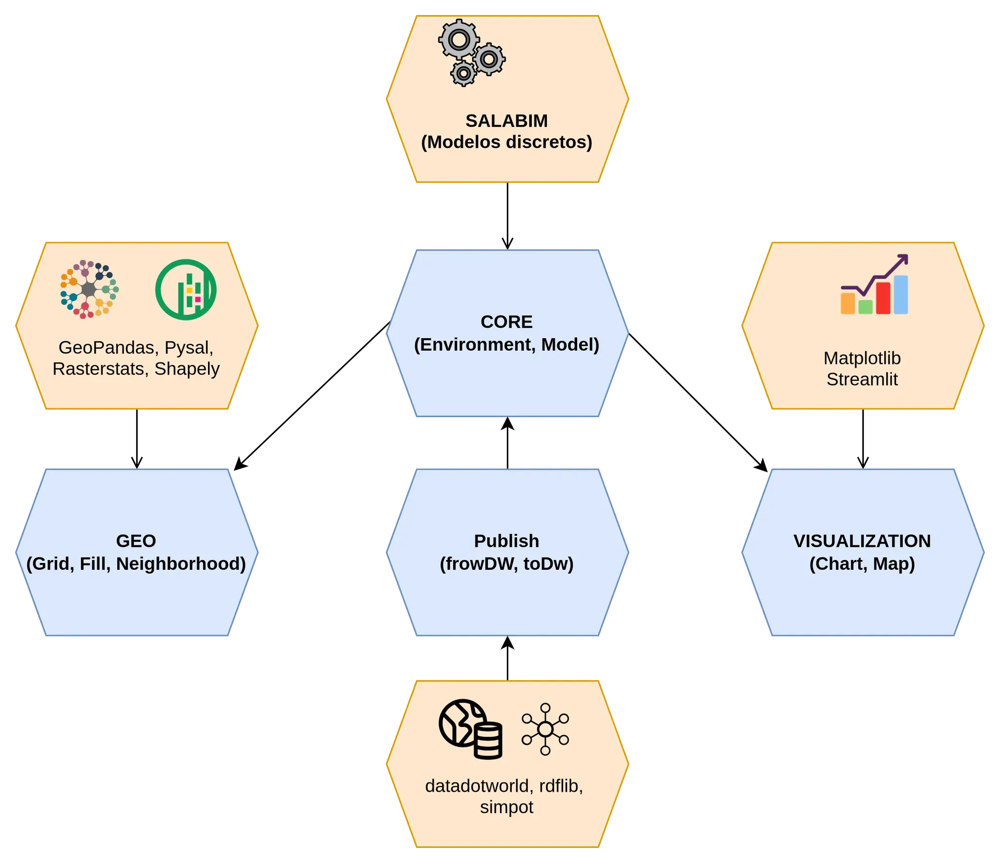

DisSModel
Biblioteca para modelagem baseada em agentes e autômatos celulares com suporte espacial.
Visão Geral da Ferramenta
A ferramenta que aqui se apresenta foi concebida para a construção e análise de modelos discretos, com ênfase na simulação de sistemas dinâmicos espaciais. Inspirada na biblioteca Terrame, a proposta é proporcionar um ambiente flexível e integrado ao ecossistema Python, utilizando um conjunto de bibliotecas amplamente reconhecidas no mercado para facilitar tanto a modelagem quanto a visualização de dados espaciais.
Embora a Terrame seja focada na simulação discreta e no controle de eventos discretos no domínio territorial, a versão Python propõe uma série de módulos especializados para integrar funcionalidades geoespaciais, controle de eventos e visualização de maneira mais modular e extensível.
Objetivos
- Modelagem Discreta: A ferramenta permite a criação de modelos discretos, utilizando a biblioteca Salabim para controle de eventos discretos.
- Integração Espacial: Oferece uma camada robusta de suporte à análise espacial por meio do uso de bibliotecas como GeoPandas, PySAL, Shapely e RasterStats, que permitem o tratamento e análise de dados geoespaciais.
- Visualização Interativa: Com o auxílio de Matplotlib e Streamlit, proporciona visualizações ricas e interativas dos modelos gerados, auxiliando na análise e na interpretação dos dados de maneira intuitiva.
- Publicação e Integração: Inclui uma integração com o DataWorld, permitindo que os modelos e resultados possam ser facilmente compartilhados, documentados e publicados.
Esta ferramenta foi criada com o intuito de oferecer aos pesquisadores, analistas e engenheiros uma plataforma eficiente e adaptável para realizar experimentos e gerar resultados significativos em modelos discretos e análises espaciais.
Estrutura da Documentação
A documentação está estruturada em quatro módulos principais, cada um com seu foco específico. A seguir, apresentamos os principais módulos que compõem a ferramenta:
- Módulo Core (Salabim): O módulo central da ferramenta, responsável pelo controle de eventos discretos e pela simulação do comportamento do modelo. Este módulo utiliza a biblioteca Salabim, que oferece funcionalidades robustas para a modelagem de processos discretos e controle de eventos no tempo.
- Módulo Geo (GeoPandas, PySAL, Shapely, RasterStats): Este módulo oferece a infraestrutura necessária para trabalhar com dados geoespaciais. Com o uso de GeoPandas, é possível carregar, manipular e analisar dados geográficos em diversos formatos. Além disso, PySAL e Shapely permitem a análise espacial e a geração de vizinhanças, enquanto RasterStats possibilita a análise de dados rasterizados.
- Módulo Visualization (Matplotlib, Streamlit): O módulo de visualização é projetado para criar gráficos e interfaces interativas. Usando Matplotlib, é possível gerar gráficos estáticos detalhados, enquanto Streamlit facilita a criação de interfaces interativas, permitindo ao usuário visualizar e manipular os resultados de maneira dinâmica e em tempo real.
- Módulo Publish (DataWorld): O módulo de publicação integra a ferramenta ao DataWorld, um ambiente colaborativo para visualização e compartilhamento de dados. Esta funcionalidade facilita a publicação de resultados, permitindo que o modelo e seus dados possam ser compartilhados e acessados por outros usuários de forma simples e eficiente.
